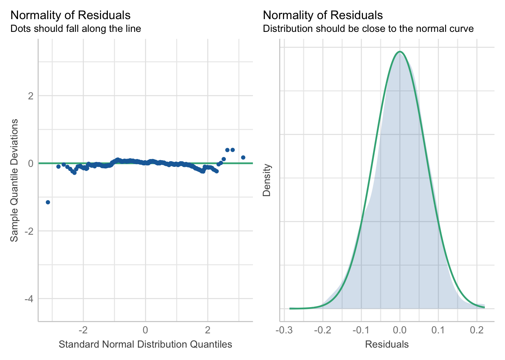
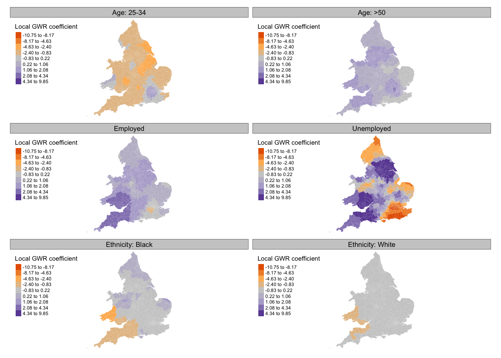

Last week, we explored spatial dependency and methods for measuring it. This week, we will examine how spatial autocorrelation can impact our analyses, especially in models where independence assumptions are crucial. To address these dependencies, we will use the GWmodel library to calculate local summary statistics for geographical areas and to fit basic spatially explicit models to our data.
5.1 Lecture slides
You can download the slides of this week’s lecture here: [Link].
5.2 Reading list
Essential readings
Harris, R. 2019. Chapter 8: Not just nuisance: Spatialising social statistics. In: Whitworth, A. (ed). Towards a Spatial Social Policy: Bridging the Gap Between Geography and Social Policy. Bristol: Policy Press. [Link]
Franklin, R. 2022. Quantitative methods I: Reckoning with uncertainty. Progress in Human Geography 46(2): 689-697. [Link]
Franklin, R. 2023. Quantitative methods II: Big theory. Progress in Human Geography 47(1): 178-186. [Link]
Suggested readings
Brunsdon, C., Fotheringham, M., and Charlton, M. 2002. Geographically Weighted Regression. Journal of the Royal Statistical Society: Series D (The Statistician) 47(3): 431-443. [Link]
Comber, A., Brunsdon, C., Charlton, M. et al.. 2022. A route map for successful applications of Geographically Weighted Regression. Geographical Analysis 55(1): 155-178. [Link]
Hochstenbach, C., Howard, A., and Arundel, R. 2024. Tijdschrift voor Economische en Sociale Geografie. [Link]
5.3 Elections results in England and Wales
This week we will investigate the political geography of England and Wales, focusing on the results of the July 2024 General Election, which was won by the Labour Party led by Keir Starmer. You will work with data extracted from two data sources: the constituency results from the election and socio-demographic information relating to age groups, economic status, and ethnic background from the 2021 Census, extracted using the Custom Dataset Tool. These datasets have been prepared and merged. Along with this dataset, we also have access to a GeoPackage that contains the boundaries of the parliamentary constituencies.
You can download both files below and save them in your project folder under data/attributes and data/spatial, respectively.
File
Type
Link
England and Wales Parliamentary Constituencies GE2024
Rows: 575 Columns: 28
── Column specification ────────────────────────────────────────────────────────
Delimiter: ","
chr (6): constituency_code, constituency_name, region_name, winning_party, ...
dbl (22): eligible_voters, valid_votes, conservative_votes, labour_votes, li...
ℹ Use `spec()` to retrieve the full column specification for this data.
ℹ Specify the column types or set `show_col_types = FALSE` to quiet this message.
Reading layer `England-Wales-GE2024-Boundaries' from data source
`/Users/justinvandijk/Library/CloudStorage/Dropbox/UCL/Web/jtvandijk.github.io/GEOG0030/data/spatial/England-Wales-GE2024-Boundaries.gpkg'
using driver `GPKG'
Simple feature collection with 575 features and 8 fields
Geometry type: MULTIPOLYGON
Dimension: XY
Bounding box: xmin: 85713.71 ymin: 7054.1 xmax: 655644.8 ymax: 657536.5
Projected CRS: OSGB36 / British National Grid
# inspecthead(elec_24)
# A tibble: 6 × 28
constituency_code constituency_name region_name winning_party eligible_voters
<chr> <chr> <chr> <chr> <dbl>
1 W07000081 Aberafan Maesteg Wales Lab 72580
2 E14001063 Aldershot South East Lab 78553
3 E14001064 Aldridge-Brownhil… West Midla… Con 70268
4 E14001065 Altrincham and Sa… North West Lab 74025
5 W07000082 Alyn and Deeside Wales Lab 75790
6 E14001066 Amber Valley East Midla… Lab 71546
# ℹ 23 more variables: valid_votes <dbl>, conservative_votes <dbl>,
# labour_votes <dbl>, libdem_votes <dbl>, conservative_vote_share <dbl>,
# labour_vote_share <dbl>, libdem_vote_share <dbl>,
# aged_15_years_and_under <dbl>, aged_16_to_24_years <dbl>,
# aged_25_to_34_years <dbl>, aged_35_to_49_years <dbl>,
# aged_50_years_and_over <dbl>, eco_not_applicable <dbl>,
# eco_active_employed <dbl>, eco_active_unemployed <dbl>, …
# inspecthead(cons_24)
Simple feature collection with 6 features and 8 fields
Geometry type: MULTIPOLYGON
Dimension: XY
Bounding box: xmin: 368283 ymin: 100922.9 xmax: 524969.7 ymax: 393552.1
Projected CRS: OSGB36 / British National Grid
pcon24cd pcon24nm pcon24nmw bng_e bng_n long lat
1 E14001063 Aldershot 484716 155270 -0.78648 51.29027
2 E14001064 Aldridge-Brownhills 404720 301030 -1.93172 52.60704
3 E14001065 Altrincham and Sale West 374132 389051 -2.39049 53.39766
4 E14001066 Amber Valley 440478 349674 -1.39771 53.04282
5 E14001067 Arundel and South Downs 497309 118530 -0.61584 50.95798
6 E14001068 Ashfield 450035 356564 -1.25410 53.10395
globalid geom
1 {3F742659-208E-4859-8905-1CE5E2B87AAC} MULTIPOLYGON (((485406.9 15...
2 {4668E55F-5248-45E4-9927-30562A6812D5} MULTIPOLYGON (((406519.1 30...
3 {56FDBCDF-25DA-4EE5-AB66-6FC9C71D2927} MULTIPOLYGON (((379104.1 39...
4 {9F9742E9-AD8C-4878-9841-1DF40BBA2619} MULTIPOLYGON (((444868.4 35...
5 {4AFD2380-5BB7-4A01-8712-8637117E96D4} MULTIPOLYGON (((523813.2 11...
6 {E0D1319E-FD1E-43AF-B809-79127FB22B22} MULTIPOLYGON (((455809 3579...
You can inspect both objects using the View() function.
5.3.1 Geographically weighted correlation
In GEOG0018 Research Methods in Human Geography, we already worked with this electoral dataset and we hypothesised that predominantly older voters tend to support the Conservative Party. To explore this, we examined the relationship between the proportion of individuals over 50 years old in each parliamentary constituency (aged_50_years_and_over) and the proportion of votes cast for the Conservative Party (conservative_vote_share). A scatterplot and Pearson’s correlation revealed a moderate association between the two variables, suggesting a possible link between age demographics and Conservative voting patterns:
Pearson's product-moment correlation
data: elec_24$aged_50_years_and_over and elec_24$conservative_vote_share
t = 16.472, df = 573, p-value < 2.2e-16
alternative hypothesis: true correlation is not equal to 0
95 percent confidence interval:
0.5086971 0.6199173
sample estimates:
cor
0.5668849
# scatterplotplot(elec_24$aged_50_years_and_over, elec_24$conservative_vote_share, xlab ="Proportion of population over 50 years old",ylab ="Proportion of votes for the Conservative party")
Figure 1: Quick scatterplot
However, as you should know by now, the first step when working with spatial data is to map your variables:
Figure 3: Proportions of population over 50 years old.
Looking at the maps, the spatial distribution of Conservative vote share and the proportion of the population over 50 appears neither random nor uniform. This raises the question to what extent the observed correlation in Figure 1 holds consistently across different constituencies? To answer this we can run a Geographically Weighted Correlation using the GWmodel library.
Geographically Weighted Correlation (GWC) allows us to investigate whether the strength and direction of the association between variables vary across space. By applying a localised correlation technique, GWC calculates the correlation coefficient within specified spatial windows or kernels across the study area. This can reveal geographic areas where the relationship is stronger or weaker, providing more insight than a single global correlation and helping us to understand spatial heterogeneity in the data.
The GWmodel library allows us to calculate local statistics, such as means, standard deviations, variances, and correlations. But as with spatial autocorrelation, we must define what local means. One approach is to use a kernel function to select which values contribute to each local estimate. Kernels operate on point locations (e.g. polygon centroids) and apply a window with a specified shape and bandwidth. The bandwidth, which defines the kernel’s size, can be set in absolute terms (e.g. within 10 km) or in relative terms (e.g. the 10 nearest centroids), the latter known as an adaptive kernel.
The GWmodel library uses the older sp data format for handling spatial data. We therefore need to convert our current sf object to sp before continuing:
R code
# to spcons_24_sp <-as_Spatial(cons_24)
The sf package is now preferred over sp in R for its modern, efficient handling of spatial data. By using simple features, a standardised format for spatial geometries, sf is more compatible with other geospatial tools and integrates smoothly with the tidyverse, simplifying data manipulation and analysis. However, some libraries still rely on sp and have not yet transitioned to sf.
We can now calculate a geographically weighted correlation. We will use an adaptive bandwidth that estimates the local correlation using the 25 nearest constituencies:
Min. 1st Qu. Median Mean 3rd Qu. Max.
-0.02121 0.57869 0.72341 0.68576 0.83984 0.95214
The results of the outcomes of gwss function can be accessed through the $SDF data frame.
The summary shows that there indeed seems to be variation of this relationship across the country, with the local Pearson correlation ranging from very weak to very strong. Of course, we can map this in the usual way:
Figure 4: Local correlation values conservative_vote_share and aged_50_years_and_over variables.
While the map shows correlation patterns, it does not indicate statistical significance. To evaluate this, we can use a Monte Carlo simulation with the gwss.montecarlo() function. However, for a large dataset like ours, this process is computationally intensive and time-consuming, especially with more than the default 99 simulations.
Although we will not run a Monte Carlo simulation here, the code below demonstrates how to run this and link the results back to the cons_24 spatial dataframe
It took more than 2 minutes to run the Monte Carlo simulation on an Apple MacBook Pro M1 (16GB RAM) with the default of 99 simulations.
5.3.2 Geographically weighted regression
A correlation describes the strength and direction of a linear relationship, but if we want to quantify the change in a dependent variable (y) for a one-unit change in the independent variable(s) (x) we need to run a regression. Geographically weighted regression (GWR) is used when the relationship between a dependent and set of independent variables is not constant across space, meaning the model coefficients vary by location. This is useful when you suspect that the relationship between variables may change depending on the geographic context. GWR provides a localised understanding of the relationships by allowing each observation to have its own set of regression coefficients, which can provide insights into how relationships differ across the study area.
GWR fits a separate regression equation at each location in the study area, weighting nearby observations more heavily than those farther away. Again, the weighting is typically based on a kernel function. The basic GWR equation is:
where \((\upsilon_{i}, v_{i})\) are the coordinates of location \(i\) and \(\beta_{k}(\upsilon_{i}, v_{i})\) are the location-specific coefficients.
5.3.2.1 Multivariate regression
To predict the Conservative voter share, we hypothesise that certain socio-demographic variables may play a significant role. These independent variables include:
Variable
Description
eco_active_employed
Proportion of economically active employed individuals.
eco_active_unemployed
Proportion of economically active unemployed individuals.
eth_white
Proportion of the population identifying as white.
eth_black
Proportion of the population identifying as black.
aged_25_to_34_years
Proportion of the population between ages 25 and 34.
aged_50_years_and_over
Proportion of the population over age 50.
We can run the multivariate regression as follows:
The model summary indicates that most variables are statistically significant predictors of Conservative vote share. The results suggest that older and employed populations are linked to higher Conservative support, while younger age groups and certain ethnic proportions show a negative relationship.
We can now run the diagnostics to see whether the regression assumptions are met:
R code
# run diagnosticsperformance::check_model(lm_voteshare, check =c("qq", "normality"))

Figure 5: Check for normality of residuals.
R code
# run diagnosticsperformance::check_model(lm_voteshare, check =c("linearity", "homogeneity"))
Figure 6: Check for linearity and homogeneity
R code
# run diagnosticsperformance::check_model(lm_voteshare, check =c("vif", "outliers"))
Figure 7: Check for influential observations and multicollinearity.
5.3.2.2 Geographically weighted regression
The model diagnostics seem generally fine, perhaps except for the linearity check. This could indicate a curved relationship or, alternatively, suggest spatial dependence in the relationship. If spatial dependence is present, it may imply that the observations are not independent. We can examine this by assessing whether the model residuals display spatial dependence. Let us begin with a map:
Looking at Figure 8 there appears to be some spatial structure in the model residuals. We can test this more formally using Moran’s I test to assess spatial autocorrelation:
Warning in poly2nb(cons_24, queen = TRUE): some observations have no neighbours;
if this seems unexpected, try increasing the snap argument.
Warning in poly2nb(cons_24, queen = TRUE): neighbour object has 3 sub-graphs;
if this sub-graph count seems unexpected, try increasing the snap argument.
Monte-Carlo simulation of Moran I
data: cons_24$lm_residuals
weights: cons_24_nb_weights
number of simulations + 1: 1000
statistic = 0.4155, observed rank = 1000, p-value = 0.001
alternative hypothesis: greater
The Moran’s I test indicates significant spatial autocorrelation in our model residuals, suggesting that the observations are not independent. As a result, we can proceed with a Geographically Weighted Regression to account for spatial variation in the relationship between the variables.
We will first estimate the ‘optimal’ bandwidth using an automated bandwidth selection procedure:
***********************************************************************
* Package GWmodel *
***********************************************************************
Program starts at: 2026-01-13 13:08:36.515551
Call:
gwr.basic(formula = conservative_vote_share ~ eco_active_employed +
eco_active_unemployed + eth_white + eth_black + aged_25_to_34_years +
aged_50_years_and_over, data = cons_24, bw = cons_24_bw,
adaptive = TRUE)
Dependent (y) variable: conservative_vote_share
Independent variables: eco_active_employed eco_active_unemployed eth_white eth_black aged_25_to_34_years aged_50_years_and_over
Number of data points: 575
***********************************************************************
* Results of Global Regression *
***********************************************************************
Call:
lm(formula = formula, data = data)
Residuals:
Min 1Q Median 3Q Max
-0.286730 -0.040843 0.001182 0.044496 0.220419
Coefficients:
Estimate Std. Error t value Pr(>|t|)
(Intercept) -0.16210 0.08779 -1.846 0.06535 .
eco_active_employed 1.36140 0.13208 10.308 < 2e-16 ***
eco_active_unemployed -0.32339 0.91429 -0.354 0.72369
eth_white -0.28028 0.03567 -7.857 1.97e-14 ***
eth_black -0.29751 0.10190 -2.920 0.00364 **
aged_25_to_34_years -1.52695 0.20954 -7.287 1.07e-12 ***
aged_50_years_and_over 0.59711 0.09827 6.076 2.26e-09 ***
---Significance stars
Signif. codes: 0 '***' 0.001 '**' 0.01 '*' 0.05 '.' 0.1 ' ' 1
Residual standard error: 0.06797 on 568 degrees of freedom
Multiple R-squared: 0.5537
Adjusted R-squared: 0.5489
F-statistic: 117.4 on 6 and 568 DF, p-value: < 2.2e-16
***Extra Diagnostic information
Residual sum of squares: 2.624389
Sigma(hat): 0.06767633
AIC: -1451.196
AICc: -1450.941
BIC: -1940.526
***********************************************************************
* Results of Geographically Weighted Regression *
***********************************************************************
*********************Model calibration information*********************
Kernel function: bisquare
Adaptive bandwidth: 108 (number of nearest neighbours)
Regression points: the same locations as observations are used.
Distance metric: Euclidean distance metric is used.
****************Summary of GWR coefficient estimates:******************
Min. 1st Qu. Median 3rd Qu. Max.
Intercept -1.089291 -0.441131 -0.160803 0.209568 1.1375
eco_active_employed -1.045077 0.151632 0.930912 1.498222 2.8325
eco_active_unemployed -10.747683 -4.837597 0.830042 3.163451 9.8531
eth_white -1.411777 -0.365168 -0.230988 -0.109584 0.1738
eth_black -3.276551 -0.308415 -0.121533 0.071703 1.1200
aged_25_to_34_years -3.659487 -1.575036 -1.288467 -0.342851 1.9350
aged_50_years_and_over -0.287576 0.503695 1.075497 1.383006 2.1875
************************Diagnostic information*************************
Number of data points: 575
Effective number of parameters (2trace(S) - trace(S'S)): 103.6449
Effective degrees of freedom (n-2trace(S) + trace(S'S)): 471.3551
AICc (GWR book, Fotheringham, et al. 2002, p. 61, eq 2.33): -1622.807
AIC (GWR book, Fotheringham, et al. 2002,GWR p. 96, eq. 4.22): -1730.89
BIC (GWR book, Fotheringham, et al. 2002,GWR p. 61, eq. 2.34): -1880.236
Residual sum of squares: 1.444834
R-square value: 0.7542715
Adjusted R-square value: 0.7001241
***********************************************************************
Program stops at: 2026-01-13 13:08:36.575392
The global regression results are derived from the standard OLS model, representing a single regression for the entire study area without accounting for spatial variation. In contrast, the geographically weighted regression (GWR) results stem from 575 separate but spatially overlapping regression models, each fitted with geographic weighting to different spatial subsets of the data, allowing for local variation in the regression estimates. We can also see that the model fit (adjusted \(R^2\)) has increased to 70%.
All the local estimates are contained in the spatial data frame cons_24_gwr$SDF. You can inspect the results using the View() function.
We can now also map all the local \(R^2\) values to get an idea of how well the model fit varies spatially:
Use "fisher" instead of "jenks" for larger data sets
[scale] tm_polygons:() the data variable assigned to 'fill' contains positive and negative values, so midpoint is set to 0. Set 'midpoint = NA' in 'fill.scale = tm_scale_intervals(<HERE>)' to use all visual values (e.g. colors)

Figure 10: Local coefficients of the Geographically Weighted Regression.
Mapping these local estimates reveals an interesting geography, where, for example, the proportion of the population over 50 years old is a better predictor for the Conservative vote share in regions like the South West, Greater London, and parts of the North West and Yorkshire and the Humber.
Not all of the local regression estimates may be statistically significant. We can use use the estimated \(t\)-values, as indicated by the _TV suffix in the SDF data frame of the GWR results, to filter out those are not. For example, to filter at 95% confidence, remove \(t\)-values outside the range of -1.96 to +1.96.
In this tutorial, we have looked at geographically weighted correlation and regression. However, whilst out of the scope of this module, there are many other approaches to account for space in statistical models. Examples of such models are the spatial error model and the spatial lag model.
5.3.3.1 Spatial error model
The spatial error model is used when the error terms in a regression model exhibit spatial autocorrelation, meaning the error terms are not independent across space. This can happen due to omitted variables that have a spatial pattern or unmeasured factors that affect the dependent variable similarly across nearby locations.
The model adjusts for spatial autocorrelation by adding a spatially lagged error term (a weighted sum of the errors from neighbouring locations) to the regression equation:
\[
y = X\beta + \upsilon, \upsilon = \lambda W \upsilon + \epsilon
\]
where \(X\beta\) represents the standard regression components, \(\lambda\) is a spatial autoregressive parameter, \(W\) is a spatial weights matrix, and \(\upsilon\) is a vector of spatially autocorrelated errors.
Spatial error models can be fitted using R’s spatialreg package.
5.3.3.2 Spatial lag model
The spatial lag model is appropriate when the dependent variable itself exhibits spatial dependence. This means the value of the dependent variable in one location depends on the values in neighbouring locations. This model is used to capture the spillover effects or diffusion processes, where the outcome in one area is influenced by outcomes in nearby areas (e.g. house prices, crime rates).
The model incorporates a spatially lagged dependent variable, which is the weighted sum of the dependent variable values in neighbouring locations, into the regression equation:
\[
y = \rho Wy + X\beta + \epsilon
\]
where \(\rho\) is the spatial autoregressive coefficient, \(Wy\) represents the spatially lagged dependent variable, and \(X\beta\) represents the standard regression components.
Spatial lag models can be fitted using R’s spatialreg package.
5.3.3.3 To note
The spatial error model adjusts for spatial autocorrelation in the error terms, whereas the spatial lag model adjusts for spatial dependence in the dependent variable itself. The spatial error model does not alter the interpretation of the coefficients of the independent variables, while the spatial lag model introduces a feedback loop where changes in one area can influence neighbouring areas.
Both the spatial error and spatial lag models assume that the relationships between variables are the same across the study area, with adjustments made only for spatial dependencies. GWR, on the other hand, allows the relationships themselves to vary across space. GWR is more flexible but also more complex and computationally intensive, providing local instead of global estimates of coefficients.
5.4 Assignment
The Geographically Weighted Regression (GWR) reveals some varying patterns in the sign and directiion of the Conservative voter share, but it is likely that other factors are at play. One could hypothesise that another potential predictor of the Conservative vote share is the proportion of the population employed in a particular industry. Try to do the following:
Download the dataset provided below and save it to the appropriate subfolder within your data directory. The csv, extracted using the Custom Dataset Tool, contains the number of employed individuals as recorded in the 2021 Census by their Standard Industrial Classification (SIC) code.
Formulate a hypothesis regarding which of the nine main industries presented in the dataset might help predict the Conservative vote share.
For the chosen industry variable:
Calculate the share of individuals employed in that industry.
This week, we explored decomposing global measures to account for non-stationarity in spatial variables. Geographically Weighted Regression (GWR) is particularly useful when the relationship between variables varies across space, as it allows for localised regression coefficients and helps identify spatial heterogeneity that might be overlooked in global models. This was a rather heavy one, time for some light reading?